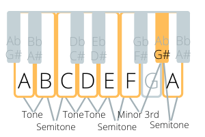
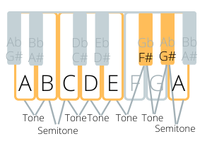

More Scales
So far we have seen seven different scales, each a “mode” of the major scale. These are the most common in western music, but there are more. Technically, there are thousands of potential scales, but not very many of them get used. In this chapter, I will describe some of the more common ones. If you want to learn about more scales, check out musical traditions from other cultures. Classical music in India uses many scales I haven’t listed. Indian scales are called “Raga,” although the word “Raga” has a much deeper meaning than the western word “scale” that I don’t feel qualified to speak on. In Arabic cultures, there are many scales as well, and their word for them is Maqam (or Makam), which I believe is also a much deeper concept than the western “scale.” I recommend doing Melody Ear Training Exercise 1, 3, and 5 using any scale you want to learn to a high level of fluency.
Harmonic Minor Scale
The harmonic minor scale is similar to the regular minor scale, but the seventh note is raised. It’s a minor scale that uses a major seventh. Below are images of A harmonic minor, along with a recording.


Notice the pattern of tones and semitones. The distance between the sixth note and the seventh note is bigger than a tone: it’s a minor third. As with all scales, you can play a harmonic minor scale starting from any note, just follow this pattern of tones and semitones (and a minor third).
As with the major scale, there are different modes of the harmonic minor scale, each of them having a different emotional quality. The fifth mode of the harmonic minor scale is somewhat common. You could play this by playing A harmonic minor starting on E, or by starting on any note and going up a semitone, then a minor third, semitone, tone, semitone, tone, and tone.
Melodic Minor Scale
The melodic minor scale has a raised sixth as well as a raised seventh. So it’s a minor scale with a major sixth and seventh, or a major scale with a minor third, depending on how you look at it. But, the third is the most important note to determine whether the scale is major or minor (you’ll know why if you’ve read about harmony), and that’s why this is called the melodic minor scale.


As always, there are seven modes of the melodic minor scale. These modes are worth studying if you want to play modern jazz.
Classical musicians are taught that you are supposed to play this scale differently depending on whether you are ascending or descending it. Ascending, you play the melodic minor as I described, but descending you play the regular minor scale. This is because many classical composers in the past (particularly J.S. Bach) have written pieces that tend to use the raised sixth and seventh note when the melody is going up the scale, and then the lowered sixth and seventh note when the melody is going down the scale. This is a useful concept in the particular genre of European classical music, but in other genres, it doesn’t make much sense.
In jazz and Indian classical music, this scale is played the same ascending and descending. If you want to learn more about the uses of this scale, you could buy a classical music theory book, a jazz music theory book, and/or find a teacher who comes from an Indian musical tradition that uses this scale.
Diminished Scale
I find this scale quite difficult to wrap my ear around. The pattern of tones and semitones for this scale is: tone, semitone, tone, semitone, tone, semitone, tone, semitone. Notice it just goes back and forth between tones and semitones. Also notice that there are eight notes in this scale, not seven. This scale is mostly used in music where you switch between scales often during a song, as in some jazz music. The diminished scale can be used as a transition scale between two other scales, for example. A song will rarely stay on the diminished scale for very long. It’s possible to extensively study the various uses of the diminished scale, but that’s not a topic I want to cover in this book.
Whole Tone Scale
As the title suggests, this scale is played only using tones. There are only six notes in this scale. The uses for this scale are similar to the diminished scale.